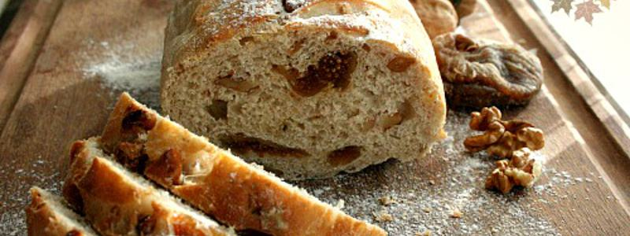

Fig Walnuts Bread

12 3 h 1 h
Ingredients
Overall
| Quantity | Name |
|---|---|
| 500 g | Whole-wheat flour |
| 300 ml | Water |
| 100 g | Walnuts |
| 100 g | Fig |
| 60 g | Raisins |
| 1 tbsp | Oil |
| 1 tsp | Sucre |
| 1 tsp | Salt |
| 7 g | Dry yeast |
12 3 h 1 h
| Quantity | Name |
|---|---|
| 500 g | Whole-wheat flour |
| 300 ml | Water |
| 100 g | Walnuts |
| 100 g | Fig |
| 60 g | Raisins |
| 1 tbsp | Oil |
| 1 tsp | Sucre |
| 1 tsp | Salt |
| 7 g | Dry yeast |